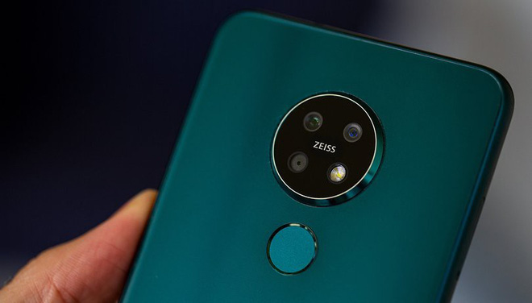
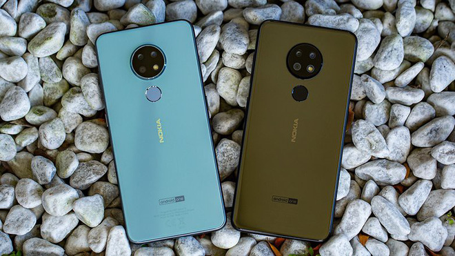
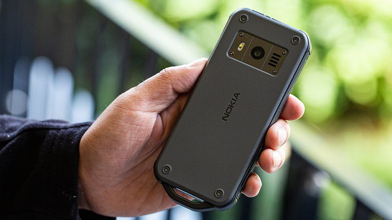
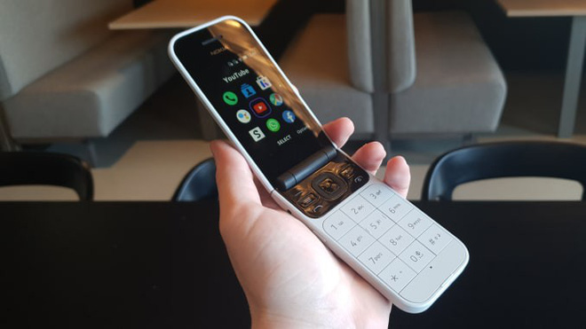

Kể từ khi mua lại mảng di động của Nokia, HMD Global đã và đang làm khá tốt trong việc gầy dựng lại thương hiệu điện thoại đình đám một thời này. Các sản phẩm Nokia mới nhất cho thấy HMD tiếp tục tập trung và việc sản xuất các mẫu máy hợp thời và mang đến cập nhật phần mềm nhanh chóng, cũng như thỉnh thoảng “hồi sinh" một mẫu điện thoại cơ bản ngày nào.
Đại diện HMD Global đã có mốt số chia sẻ về cách mà họ muốn sử dụng thương hiệu Nokia để chiếm thị phần trong “trò chơi vương quyền" của ngành smartphone.
“Việc tạo ra sản phẩm, từ hoàn thiện đến màu sắc, là những gì mà HMD Global đang đầu tư, thị trường có tính cạnh tranh cao nhưng HMD Global vẫn muốn tham gia theo cách của mình" - Alberto Matrone, Phó Chủ tịch Khu vực Tây Âu của HMD chia sẻ.
Nokia 6.2 và Nokia 7.2 có thiết kế theo xu hướng. Nokia 6.2 là thiết bị kế thừa của dòng Nokia 6, chiếc smartphone đánh dấu sự quay trở lại thị trường của Nokia dưới trướng HMD Global. Nokia 7.2 có thể xem là một thiết bị ở phân khúc cao hơn với ống kính Zeiss, PureView, kính Gorilla Glass và cùng với đó là mức giá chấp nhận được.
Như Alberto Matrone đã chỉ ra trong cuộc phỏng vấn, công nghệ tiếp tục phát triển và HMD Global sẽ luôn đuổi theo.
Cả hai đều chạy Android 9 Pie và nằm trong chương trình Android One, đảm bảo rằng người tiêu dùng luôn nhận cập nhật nhanh chóng và do đó an toàn khi sử dụng các thiết bị lâu dài. Đó là một thông điệp không dễ tiếp cận người tiêu dùng, nhưng là một thông điệp rất quan trọng. Rất ít thương hiệu sử dụng điều này như một chiến lược tiếp thị, mà thường tập trung vào các tính năng, nhưng HMD thì khác.
HMD Global còn ra mắt Nokia 2720 Flip và Nokia 800 Tough, không chỉ chơi lại con bài “hoài cổ" mà HMD còn tập trung vào một thị trường khác ít có hãng nào đi theo. Nếu Nokia 2720 Flip theo hướng dành cho người dùng lớn tuổi nhờ vào những phím bấm lớn, hoặc đối tượng muốn hoài cổ, thì sản phẩm thứ hai dành cho những người làm việc trong các môi trường đặc biệt như trong ngành xây dựng, cũng như những người yêu thích thể thao ngoài trời và thực sự cần một thiết bị bền, không sợ nước, bụi, rơi rớt.
Trong thế giới của điện thoại cơ bản, HMD Global là thế lực rất mạnh mẽ nhờ cái tên Nokia. Ai mà không liên tưởng đến Nokia khi nói về các điện thoại “cục gạch" bền chắc, gần như không thể phá hủy cơ chứ? HMD Global coi điện thoại cơ bản là linh hồn của công ty.
Nếu bạn mua điện thoại cơ bản Nokia, bạn có thể sẽ cân nhắc mua một thiết bị hoàn toàn khác nhưng cũng mang cái tên ấy.
Alberto Matrone cho biết, HMD Global dựa vào một số đối tác để có thể cung cấp những thứ tốt nhất cho người dùng. HMD Global hợp tác với Zeiss cho máy ảnh trên smartphone, hợp tác với Google về phần mềm, Qualcomm liên quan đến các chip được tích hợp vào điện thoại và Foxconn để sản xuất các thiết bị.
Một smartphone 5G đã được HMD lên lịch và sẽ sớm ra mắt với mức giá phải chăng và nó sẽ là một sản phẩm mà người dùng có thể sử dụng trong một thời gian dài, nhờ các bản cập nhật liên tục.
HMD Global có những ý tưởng rõ ràng và cố gắng thực hiện chiến lược của mình trong sự cạnh tranh gay gắt và ngân sách không quá lớn của chính họ, với nhiều hạn chế hơn những tên tuổi lớn như Samsung và Huawei. Vì vậy, chúng ta không thể mong đợi sự xuất hiện của smartphone Nokia màn hình gập trong tương lai gần, điều này sẽ không nằm trong chiến lược của HMD Global.
Bạn nghĩ gì về những việc mà HMD Global đang làm với thương hiệu Nokia?